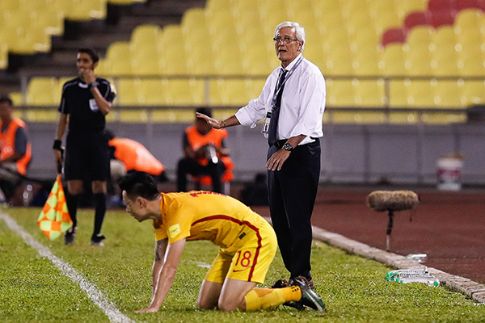

如果中国孩子只爱乒乓国足很难变成足球巨人
 意大利名帅里皮。 本文图片 视觉中国
意大利名帅里皮。 本文图片 视觉中国
11月15日，意大利名帅里皮带领中国国家队参加正式比赛已经一周年了。但这个纪念日或许并不快乐，12强赛后的头两场热身赛，一场0比2负于塞尔维亚，一场0比4完败给哥伦比亚。两场热身赛一球未进、净吞六弹，里皮征战2019亚洲杯之旅的开局异常沉重。
面对隐约的质疑声浪，里皮丝毫没有动摇，他甚至还有精力去关心意大利队60年来首次无缘世界杯的“灾后重建”。
里皮认为一切尽在自己的掌握之中。在成都商报特约记者独家专访里皮过程中，里皮坦言，找强队来本就是自找的惨败，“只有你经历了与强者的对话，你才会对自己的实力有一个清楚的认识，然后知道自己需要从哪方面努力和补缺！”
意大利名帅里皮。 本文图片 视觉中国
2018世亚预赛中国男足Vs卡塔尔，国足屡失良机里皮掩面懊恼。 “与强者对话才会知道要补什么东西！”记者：十二强赛出局之后，你第一个想法是什么？你是否和足协领导谈过话？给过他们对未来的具体建议没有？ 里皮：我们被淘汰之后，我马上就找到了中国足协的领导，希望能够组织更多的热身赛，而且是打在国际足联排名上比我们强得多的顶级队伍。只有你经历了与强者的对话，你才会对自己的实力有一个清楚的认识，然后知道自己需要从哪方面努力和补缺。